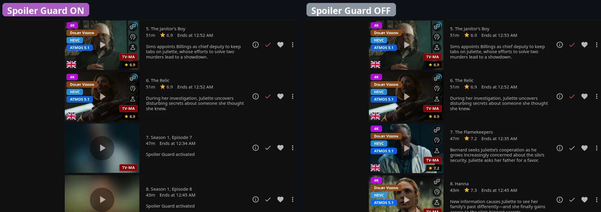
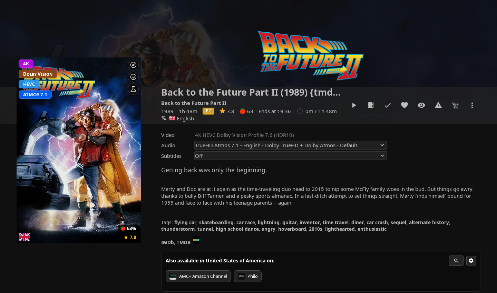
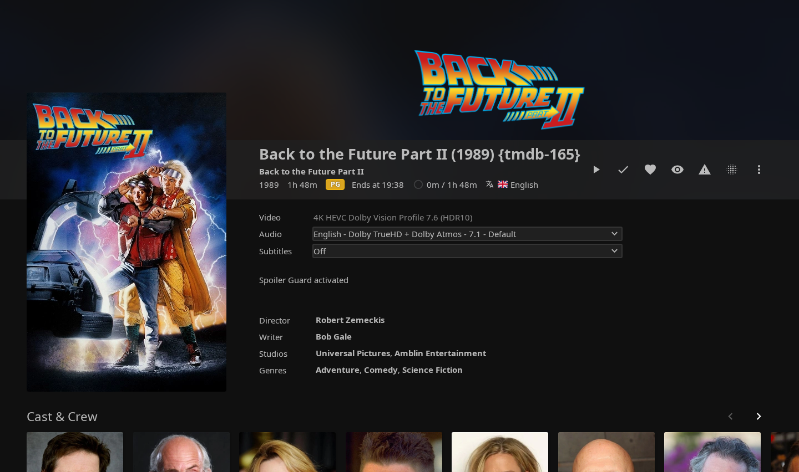
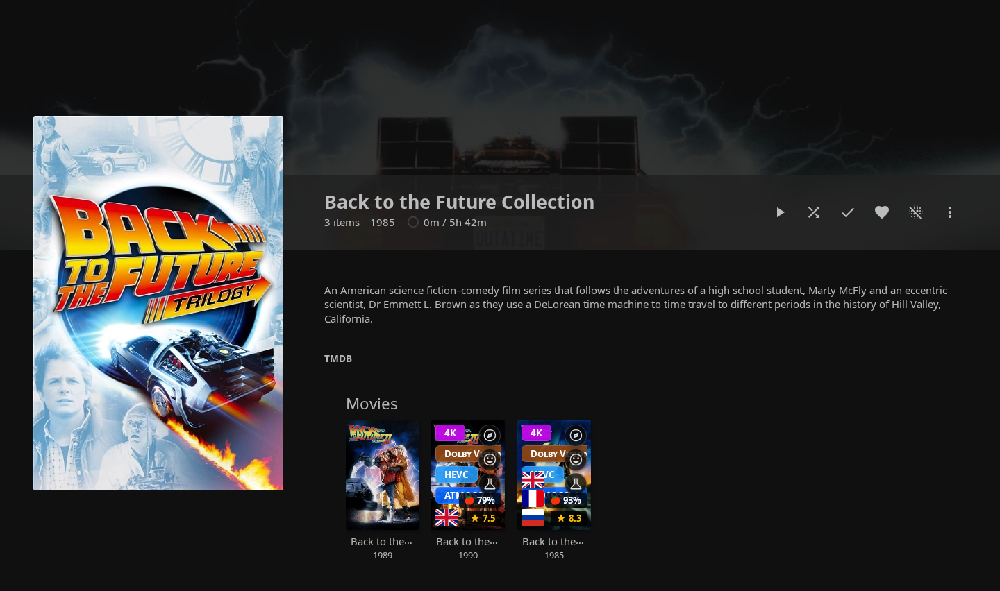
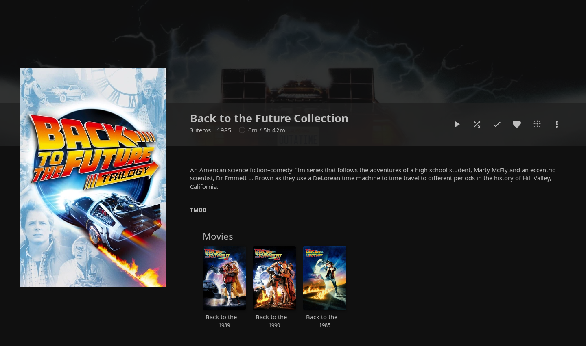
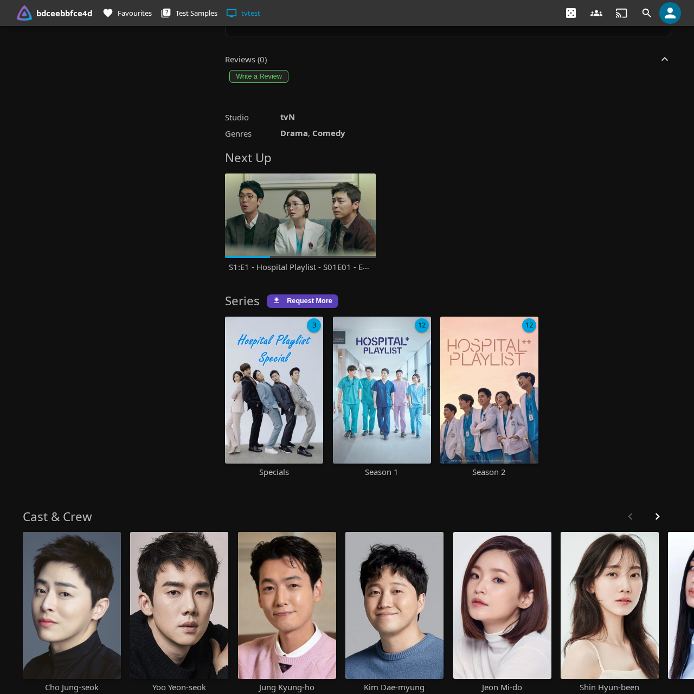
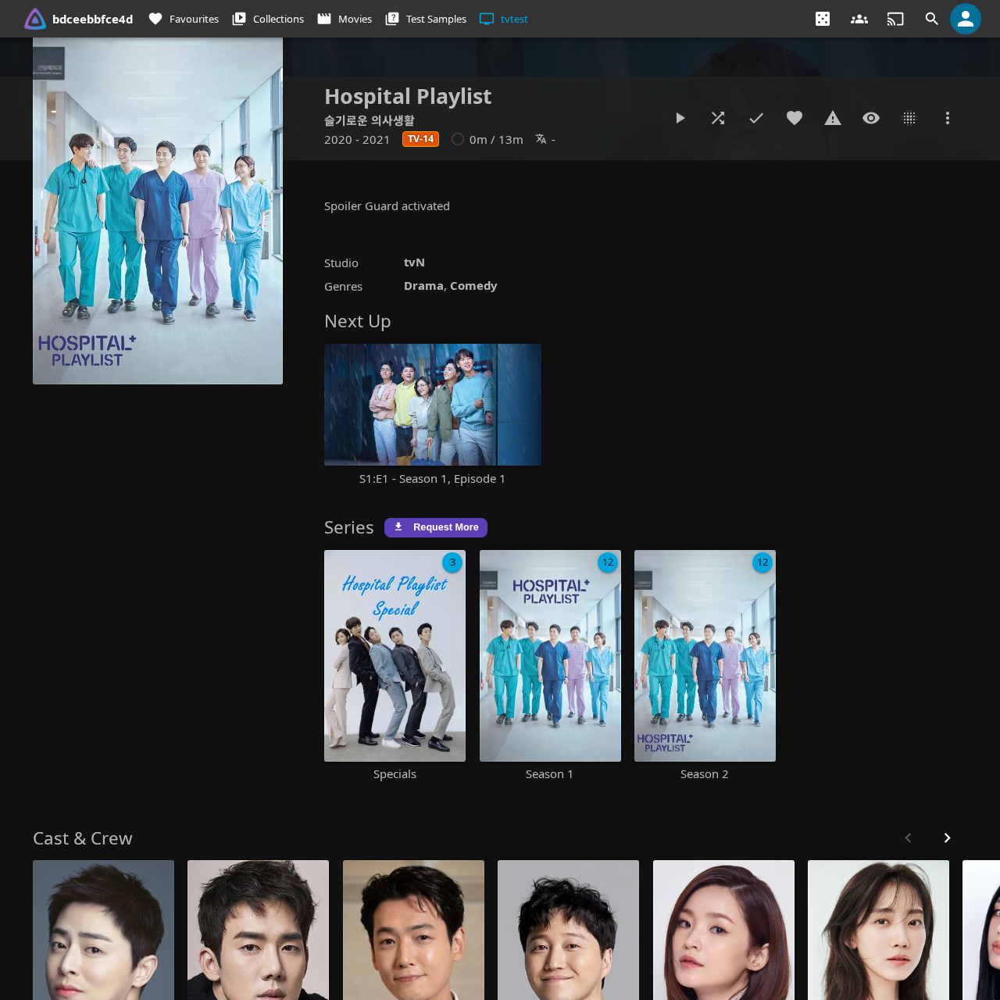

Spoiler Guard
A per-user, per-show opt-in protection layer for episodes, seasons, movies, and collections you haven't watched yet. Spoiler Guard blurs (or fully hides) thumbnail art, replaces episode titles, strips synopses, taglines, ratings, chapter names, cast lists, and reviews — all server-side, so every Jellyfin client benefits (Web, Android TV, iOS Swiftfin, Roku, Wholphin, Moonfin, Findroid, Streamyfin, etc.).

How it works at a glance
Spoiler Guard runs on the server inside Jellyfin's image and metadata APIs. When you have Spoiler Guard enabled for a series:
- Image bytes for unwatched episodes are intercepted and replaced before they leave the server — your client never sees the original frame.
- Episode metadata (titles, synopses, ratings, chapter names, cast) is stripped or rewritten in the same response, so even a "lite" mobile client that ignores image transforms still gets safe text.
- TMDB / user reviews are suppressed on the affected series detail pages.
The server forgets none of this — your watched-state, your per-show opt-in list, and the admin's policy all combine before each request is answered. There's no client-side check that a bad actor could bypass.
What Spoiler Guard protects
Once you turn Spoiler Guard on for a show or movie, the plugin hides every spoiler surface for items you haven't watched yet:
| Surface | What's hidden |
|---|---|
| Episode thumbnails | Replaced with a parent-level placeholder (Series Backdrop, Series Primary, or Collection art) or blurred, depending on the admin's Image Replacement mode. |
| Season posters | Same treatment as episode thumbnails — Season 1 always shows so you have an entry point; later seasons hide until any episode in them is watched. |
| TV show descriptions | Replaced with the configured placeholder when the admin's independent TV-show-description option is enabled. |
| Episode titles | Replaced with Season X, Episode Y so a title like "The Death of Y" can't spoil the reveal. |
| Episode synopses | Replaced with a configurable placeholder (default: Spoiler Guard activated). |
| Tags | Story tags like "Death of a main character" are dropped. |
| Chapter names | Replaced with Chapter N so the player's chapter list doesn't spoil the next scene. The chapter timestamps stay so you can still navigate. |
| Chapter thumbnails | Stripped on unwatched episodes — for movies, only chapter thumbs after your current watch position are stripped (progressive reveal). |
| Trickplay timeline previews | The sprite-sheet tiles your player uses for hover-scrubbing previews are blurred / hidden — with the same progressive reveal as chapters: a preview tile stays clear once its whole time range is behind your watch position, so scrubbing back over scenes you've already seen shows them normally while scenes ahead stay blurred. |
| Taglines | TMDB taglines like "Everything changes tonight" are dropped. |
| Ratings | The community/TMDB rating and the critic rating are both hidden — a 9.8/10 rating on a specific episode is a hint that something big happens. The Jellyfin Enhanced card rating overlay is suppressed too on the series, season, and unwatched-episode cards of a guarded show (it won't fall back to the parent series' rating); watched episodes keep theirs. |
| Air date | Hidden — a multi-month gap before an episode can imply "season finale" or "long-anticipated reveal". |
| Cast | By default, only guest stars on unwatched episodes are hidden (regular cast appears in every episode anyway). Strict mode hides the entire cast. |
| TMDB + user reviews | The Reviews panel is suppressed on series detail pages for shows you have Spoiler Guard on for. |
| Search results | Episode hints in search are rewritten to Season X, Episode Y and the matched-term echo is suppressed. |
Watched episodes pass through completely untouched. Your library doesn't change — Spoiler Guard only changes what you see.
Turning Spoiler Guard on
Per series (TV shows)
Open any series detail page. The Spoiler Guard toggle button sits in the action row next to Play / Mark Watched:
Click it. The button flips to Spoiler Guard: On and you'll see a toast confirmation:
Spoiler Guard: On
Every other Jellyfin client you use will pick up the same protection on its next image fetch — the server holds the opt-in list, not the browser.
Per movie
The same toggle button appears on Movie detail pages. Click the toggle and the poster blurs (or hides, depending on Image Replacement mode), the description swaps to the placeholder, and chapters / cast on unwatched cards get the same treatment:
| Before toggle | After toggle |
|---|---|
 |
 |
Spoiler Guard: On
Per collection
For a BoxSet (movie collection), enabling Spoiler Guard at the collection level acts as a shortcut — every movie inside the collection gets protected until you mark each one watched. The collection's own art and description pass through clear (it's the entry point you just clicked, same model as a series detail page).
With Spoiler Guard on, the collection art stays visible but the individual movie posters in the rail are protected:
| Before toggle | After toggle |
|---|---|
 |
 |
Spoiler Guard: On
Pre-arming (for titles not yet in your library)
Open the Seerr More Info modal for any title — whether you're about to request it or another user already has. You'll see an Enable Spoiler Guard button:
Spoiler Guard will engage when this title arrives in your library.
Click it to register a pending Spoiler Guard intent for the TMDB id. When the content lands in your library (via Seerr, manual import, or any other source), the plugin automatically promotes the pending entry into a real per-series or per-movie protection — no extra clicks from you.
You can also pre-arm a title another user requested. Your pending intent only activates for you when the content arrives, not for anyone else.
Image Replacement Mode — Show stock cards vs Blur
The admin chooses how unwatched cards are visually hidden. There are two modes:
The episode-specific image is replaced with a parent-level placeholder picked so the aspect ratio matches the card slot:
- Episode thumbnails (16:9) → Series Backdrop
- Season posters (2:3) → Series Primary
- Movies opted in via a collection (2:3) → Collection Primary
- Movies opted in directly / no safe parent art available → blurred version of the original (so the card always renders something instead of going blank). A pre-encoded flat dark JPEG remains as a final fail-closed safety net if the blur step itself fails.
Useful when partial-blur feels like a tease. The viewer sees a consistent grid of "this show / this franchise" art instead of mystery boxes — and when no safe parent is available, a blur rather than a blank box.
The original image runs through a server-side Gaussian blur. Silhouettes and dominant colours stay visible — you can tell something is there, but not what.

The blur intensity is admin-controlled (default 40 — strong enough to make characters unrecognizable while keeping the show's colour palette visible).
Both modes run server-side: every native client and every browser sees the same protected bytes.
After toggling — what happens on your screen
By default Spoiler Guard does a soft refresh: it immediately rewrites every <img> URL on the current page so you see the new blur/clear state instantly, without a full-page flash. Page-rendered text (Overview, episode titles, ratings) continues to show whatever was on screen until your next navigation, at which point everything will be in sync with the new state.
| Before toggle | After toggle (soft) |
|---|---|
 |
 |
If your admin enables Strict refresh mode, the page also auto-reloads after every toggle so the text updates immediately — at the cost of a brief page flash.
When you mark an episode watched
The blur (or hide-mode placeholder) automatically lifts for the episode you just marked. No manual refresh needed — the plugin intercepts the watched-state mutation and rewrites image URLs on the page within a couple of frames.
The reverse works too: marking an episode unplayed re-blurs it within the same window.
Multi-client support
Spoiler Guard intercepts at the server level, so every client sees the same protected images and metadata. Tested:
- Jellyfin Web (Chrome, Firefox, Safari)
- Wholphin (Android TV)
- Moonfin (Android TV)
- Findroid (Android)
- Swiftfin (iOS, tvOS)
- Streamyfin (mobile)
- Jellyfin Media Player (desktop)
There are no client-side tweaks to install. Once an admin turns the master switch on and a user opts a series in, every client picks it up on its next image fetch.
Auto-enable options (optional, admin-controlled)
Three admin toggles can save you from manually opting in for every new show:
- Auto-enable on first play of a new show — the first time you press play on S1E1 of a series you've never watched, the plugin adds it to your Spoiler Guard list automatically. Rewatches and jumping in at later episodes don't trigger it.
- Auto-enable on Seerr request — every successful Seerr request you submit via JE automatically registers a pending Spoiler Guard intent. When the content lands, Spoiler Guard is already on for you.
- Auto-enable when new titles are added to the library — every new show or movie that appears in a library you can see is added to your Spoiler Guard list the moment it lands, before anyone presses play. You can still switch it off per title afterwards, and a rescan or metadata refresh won't bring it back.
All three are admin-level (off by default), and the admin can limit them to TV shows only, movies only, or specific libraries. Ask your admin to turn them on if you want a hands-free experience.
Titles that were already in the library aren't armed by a rescan. An admin can arm them once with Apply to existing titles now… (or the matching scheduled task), which skips anything you already guard or have fully watched. See Guarding titles already in the library.
Disable-confirm dialog
Turning Spoiler Guard off prompts a brief confirmation:
Disable Spoiler Guard?
Original images and episode details will be visible again straight away.
A "Don't ask again for 15 minutes" checkbox lets you batch-disable a few series without re-confirming each time. The snooze is per-browser and self-expires.
This catches accidental clicks (the toggle is right next to Play / Mark Watched). If you'd rather skip the prompt every time, just tick the snooze box once — or turn it off permanently in the per-user overrides described below.
Per-user overrides
Your admin decides which spoiler surfaces get stripped, but you can relax any of them for yourself. Open the JE settings panel (gear icon → Jellyfin Enhanced) and expand the Spoiler Guard section. Under "Show me this even with Spoiler Guard on" there's a checkbox per category:
TV show descriptions, Episode descriptions, Episode titles, Chapter names, Cast list, Ratings, Air date, Taglines, Tags, and Reviews.
Every box starts checked (following your admin's policy). Uncheck one and that information becomes visible to you again on the relevant protected show or unwatched episode — for example, uncheck Ratings if you like seeing community and critic scores but still want synopses and images hidden. Overrides only affect your account; images always stay protected regardless.
A category only appears in the list when your admin has that strip enabled — there's nothing to opt out of for a category that's already off server-wide.
If your admin has turned on Advanced per-category reveals (see below), one extra checkbox shows up here with the same name. That one runs the other way round: unchecking it hides more, not less — it puts your account back on the uniform full strip instead of the reveals your admin configured.
The same section has a "Don't ask me to confirm when turning Spoiler Guard off" checkbox, which permanently skips the disable-confirmation dialog (unlike the dialog's own "Don't ask again for 15 minutes" snooze, this one never expires).
Advanced per-category reveals (optional, admin-controlled)
Normally every unwatched episode of a protected show is hidden identically. When your admin enables Advanced per-category reveals, unwatched episodes split into three groups and the first two can show a little more:
- Your next episode — the first episode you haven't watched, in season/episode order (specials don't count). Out of the box this is the only thing that changes: its real title becomes visible while the synopsis, ratings, and artwork stay hidden. You get to see what you're about to watch, and nothing else.
- The rest of that season — hidden exactly as before unless your admin relaxes titles, descriptions, or ratings for the category.
- Everything else — later seasons, seasons you skipped, and specials keep the full protection. So do images, search results, and card rating overlays, in every category — the reveals only ever affect episode metadata in lists and on detail pages.
The boundary moves as you watch: mark your next episode played and the following one takes over. Anything the plugin can't categorise with certainty stays fully hidden, so a reveal never appears by accident.
Don't want it? Uncheck Advanced per-category reveals in your own Spoiler Guard settings and your account goes back to the uniform full strip.
What's not protected (by design)
A short list of things Spoiler Guard deliberately leaves alone:
- Series titles and posters — the user-facing series identity stays visible. Series-level overviews are independently configurable: they stay visible when Hide TV show descriptions is off and use the placeholder when it is on.
- Collection posters — same reasoning. The collection art is your entry point.
- The "this episode is here" indicator — episode rows and counts in the season grid stay so you can navigate. Only the thumbnail / title / synopsis / chapters etc. are hidden.
- Season 0 (Specials) and Season 1 posters — the season poster and season overview always pass through so you have an entry point into a brand-new show without every season being a wall of placeholders. Unwatched episodes inside Season 0/1 are still protected (their thumbnails/titles/synopses are hidden until you watch them) — it's only the season-level art that's exempt.
- External-player playback — if you launch playback in an external player (mpv, VLC, infuse, etc.), that player fetches metadata directly from Jellyfin's regular APIs and may show un-stripped fields. Spoiler Guard runs inside the JE plugin's response filters, which external players bypass.
Per-user isolation
Spoiler Guard preferences are per user. Your spoiler list doesn't affect anyone else on your server — and theirs doesn't affect yours.
Cache-bust tokens are also per-user, so two users on the same family network seeing different blur states of the same image is fully supported. Native-client image caches (Glide, Coil, SDWebImage) automatically refetch when your watched-state changes, even though they otherwise cache strictly by URL.
How the server knows which user an image request belongs to: image fetches are anonymous in Jellyfin, so the plugin embeds a small per-user identity marker in the image tag values each user receives. Every client — web, Android TV, iOS, Roku — echoes that value back when it fetches the image, letting Spoiler Guard apply exactly your protection state without depending on your device's IP address. This works out of the box behind reverse proxies, VPNs, and shared/NAT networks. Requests without a marker, such as a client replaying an old cached URL, fall back through the existing single-user, cookie, and shared-IP identity ladder and fail closed if the remaining candidates are ambiguous.
Troubleshooting
The toggle button isn't showing on a series page.
The admin needs to flip the master Enable Spoiler Guard switch in the plugin config. Until that's on, no user-facing UI appears.
I enabled Spoiler Guard but I still see episode thumbnails.
- Refresh the page — your browser may have cached the original images before you opted in.
- Confirm the series is in your Spoiler Guard list (the toggle should read Spoiler Guard: On).
- Protection is applied entirely on the server (the image API returns the protected bytes for every client), so a plain refresh is enough — a hard reload (Ctrl-F5) only helps if the browser cached the clear image before you opted in.
Android TV (Wholphin / Moonfin / Findroid) shows the original images on first load after enabling Spoiler Guard.
Android TV clients cache image bytes locally using Glide / Coil. If you enabled Spoiler Guard for a series while that client already had the original thumbnails cached on disk, the client serves them from cache instead of re-fetching from the server. Clear the image cache once in the client's settings (or force-stop the app and reopen) and the protected images will load correctly from that point onward. After this first clear, Spoiler Guard's per-user cache-bust tokens and identity markers automatically invalidate the cache whenever your spoiler state changes — you won't need to clear it again.
A user sees another user's shows blurred (or their own non-guarded shows blurred) behind a reverse proxy.
This should no longer happen in normal operation. Spoiler Guard identifies image requests by the per-user identity marker embedded in image tags, which every client echoes back regardless of the IP address Jellyfin sees.
If it still happens, the affected client is probably fetching images from old cached URLs minted before this feature. Those URLs carry no marker, so the server falls back to IP matching and fails closed on a shared IP. Clear the client's image cache once so it refetches fresh marker-carrying URLs, or configure the proxy to send X-Forwarded-For and add it to Dashboard → Networking → Known proxies so the fallback path can see real client IPs too. Identity tags are automatic whenever Spoiler Guard is enabled.